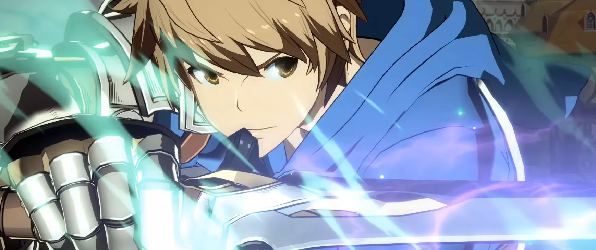

Getting Started with Fighting Games
By Tarkus Lee
Preface
If you are brand new to fighting games people are going to be excited to teach you, and as a result they are going to throw a lot of stuff at you. don"t bother with that yet. My advice is to get into the game in an organic way. Spending 20 hours in the training mode labbing an optimal combo will not help when the other guy you are playing goes full Unga Bunga and puts you in a tornado of hitting you with the same string over and over again. Sajam Said it best:
Training Mode is a place to solve problems, and as a new player you don"t even know what the problems are yet. Spending 10 hours in training mode before you have really played the game is like you have some wood and a hammer and a nail and you don"t even know what you are building or which end of the hammer to use.
— Stephen "Sajam" Lyon, YouTube
Your goal as a new player in the genre is not to master the combos or learn all the system mechanics or even to have a mental flowchart of the game state. Your goal is to get comfortable with the controls, find a character you vibe with, and most importantly have fun.
Your First Days
There are two things that are top priority when you pick up a fighting game for the first time with no outside knowledge.
- Do the tutorials (if the game has them)
- Try out each of the characters in arcade mode
Point 1 is a little dubious so allow me to elaborate. Some games have either no tutorials or bad tutorials, and some games have way too much tutorial for one sitting. Take for example UNICLR or Skullgirls . These games have very robust tutorials that cover a lot of great info, but you neither need nor can handle all of this information in one sitting. Even experienced fighting game players struggle to internalize all of the information presented at once if they try to do the tutorials in one sitting.
As a result, you should do enough tutorials to cover the basics. Sometimes a game will straight up tell you when you are doing the basic, intermediate, or advanced content, and some times they won't. If it"s the case of the latter you simply need to hold yourself accountable and stop doing tutorials when you feel like your mental stack is full.
It may not sound like it, but point 2 is just as valuable as point 1. In fighting games, people often talk about "feel". This is a term without a clear definition, but it generally means how your hands, mind, and game connect. To put it simply, you want to find something that "feels right". This is where slapping the buttons against an easy AI opponent is good. You get to experience how the character moves, you get to see first hand what the buttons are like, how much health they have, and all the other basic details of the character. I recommend doing this for every character, but if you don"t want to do every character, then just do the ones that look cool to you. It"s important that a player likes their character.
How to Grow
Once you have figured out the basics - the controls, what characters look cool, and how the game feels - you have likely picked out a couple characters that you want to learn properly. We need to ask ourself: How can I track my growth? My answer is to make yourself a checklist, and update it when you tick things off the list, or when your priorities change. For example:
- Do I Understand System Mechanics?
- Have I learned and can do my special move inputs?
- Do I know what to do in neutral?
- Can I play defense?
- Can I do consistent combos?
- Do I know what to do After a combo?
Being able to keep track of your growth is important, but also an easy trap to fall into. Winning and losing should not be your primary metric for measuring growth. Winning and losing is a bad way to track your progress because of a few reasons. Let"s say that you play against your friend every day. If you win, are you learning the matchup against the character, the matchup against the player, or growing all around? If you lose, are you getting worse, or are they just getting better faster than you? As you can guess, measuring your progress based off of winrate just leads to a bunch of unhelpful questions that don"t actually represent where you are growing and failing to grow.
Instead, try setting goals for youself that can be measured and tracked, similar to laps in a run around a track. Keep in mind that growth is not a race but a journey. So obviously let's set our first goal as point number 1 in the list above. If you are playing Guilty Gear Xrd you should learn what FD and IB are and when to use them. Adapt this point for whatever game you are playing. Doing this step will automatically help you out with step number 4. Essentially just build yourself a list of things to learn, and work your way through them. You will be able to see your growth clearly and know you are improving. Another benefit of having a list is that it forces you to research what to learn for yourself and have specific goals to ask for help with which cuts down on how much experienced players can flood you with information. Every person"s list will look a little different, but the one I put above is generally useful for most games.
The Story of 3 Gamers
Ben, Liam, and Ryou are learning to play Granblue Fantasy Versus.
Liam goes into the training mode and spends a few hours with the goal of discovering combos for
Ben has a few characters he wants to play, say
Ryou looks up a tier list and finds out who is the best character in the game, let's say
All 3 of these players have learned a part of the game, but none of them have gained the full picture yet. Let"s break it down. Liam gained the most familiarity with his character, but the combos he came up with are likely not the best and he has gained nothing for actually fighting against another player. Ben learned through trial-by-fire how to play his characters in a real environment, how neutral and defense work, and how the inter-player interactions work, but Ben has not learned any good combos or tech. Ryou learned the best combos and best tech for his character, but without the familiarity with his character that Liam gained by labbing for himself. Ryou also did not gain any knowledge for the actual match because he only focused on the things that are intended for intermediate to advanced players, and he likely won"t be able to get into those combos due to a lack of practice in neutral and defense.
This is why you need all 3 types of practice.